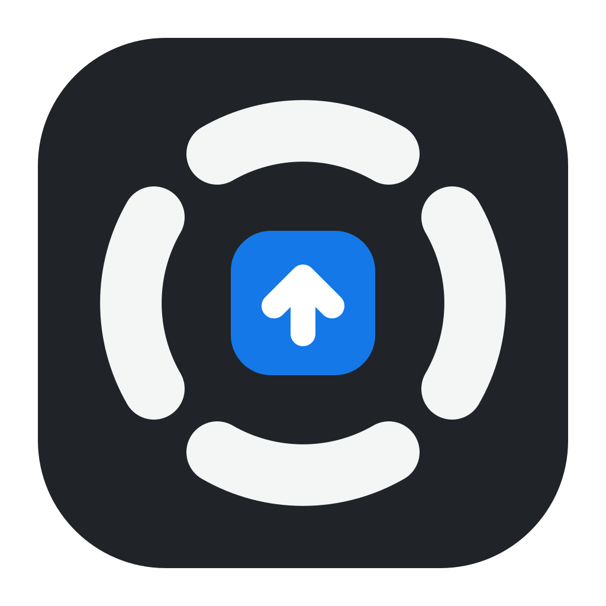

当操作是方向、速度、力度和空间关系，手柄可以成为一套完整的界面。
Menu 唤出 → 摇杆选目标 → A 确认。B 总能回退。进入场景后，屏幕显示当前控件语义，不需要逐键配置。
A 轮盘作为共同入口，B 影音验证线性扳机体验。D 演示作为第二个场景；C 窗口与 E 审片在应用接口确定后扩展。
适合远距离控制、连续浏览、空间摆放和演示讲解。大量文字输入、复杂精确绘图仍交给键鼠。
需确认目标应用 API、全局唤出和输入冲突。Xbox 键、Share、震动均不作为必需条件；摇杆光点不依赖陀螺仪。
能力依据：Microsoft XInput · W3C Gamepad · 完整设计说明
这里只改变原型体验。真实设备需要按型号校准。